- fish of the day 21.03.2026
- Rhinobatos lionotus
-
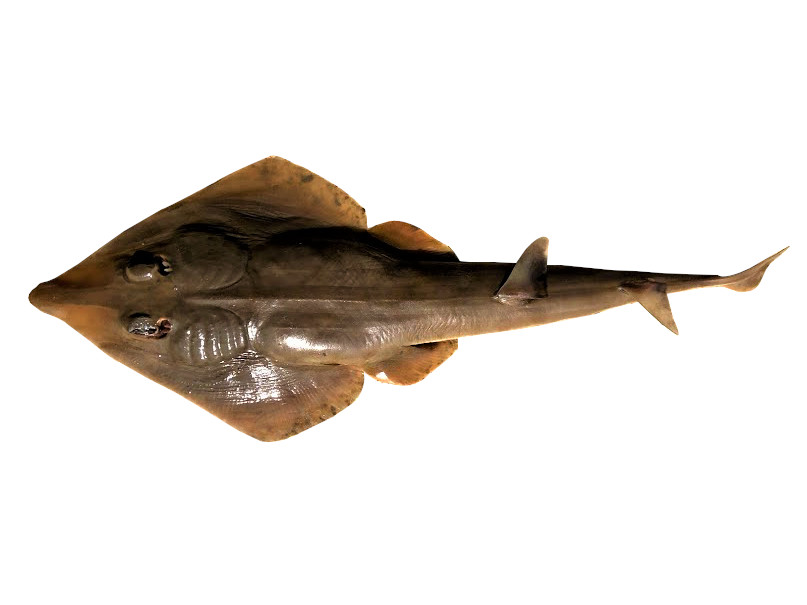
- fish of the day 20.03.2026
- Hyperphlyphe macrophthalma
-
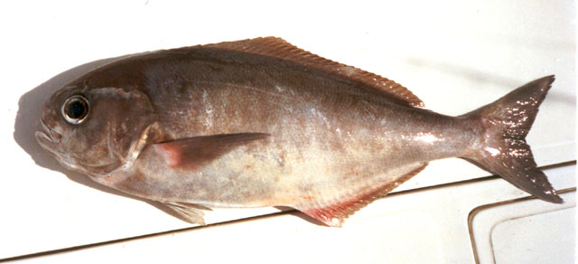
- fish of the day 19.03.2026
- Luciobarbus esocinus, Mangar
-
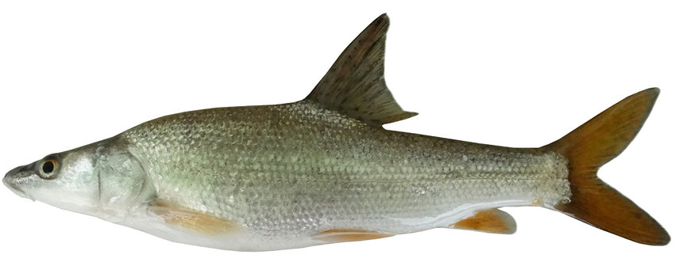
- fish of the day 18.03.2026
- Cichlasoma orinocense
-
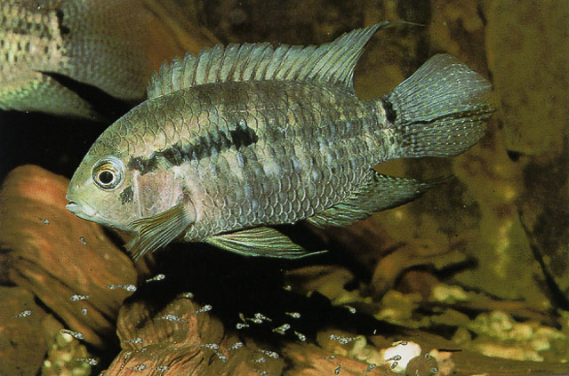
- fish of the day 17.03.2026
- Ancherythroculter wangi
-
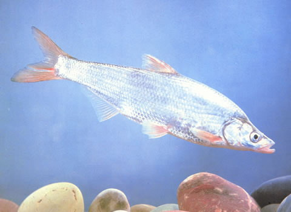
- fish of the day 16.03.2026
- Chrysiptera arnazae, Arnaz's damselfish
-
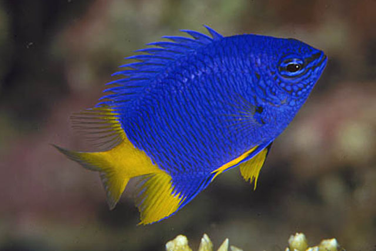
- fish of the day 15.03.2026
- Trachyrhamphus bicoarctatus, Double-ended pipefish
-
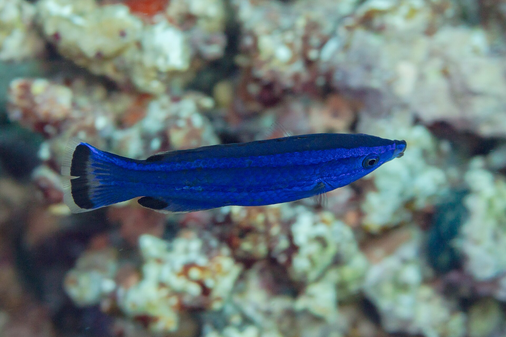
- fish of the day 14.03.2026
- Opeatogenys gracilis
-
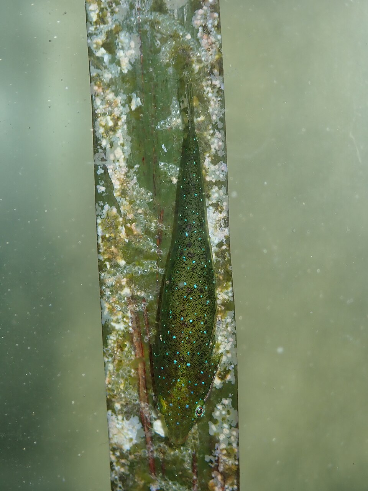
- fish of the day 13.03.2026
- Sebastes miniatus, Vermilion rockfish
-
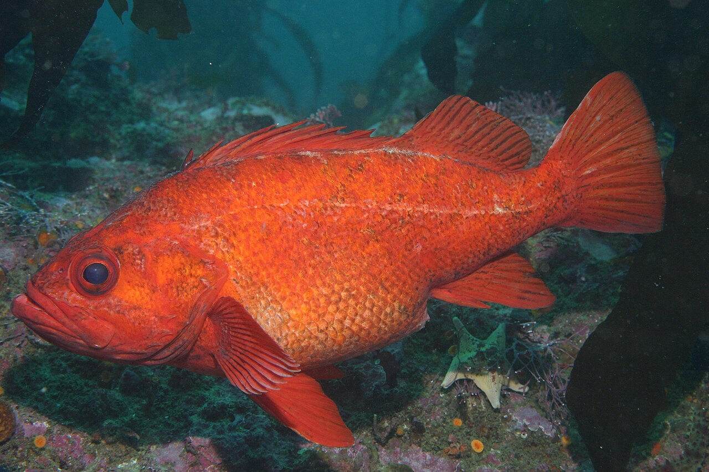
- fish of the day 12.03.2026
- Macropinna microstoma, Barreleye fish
-
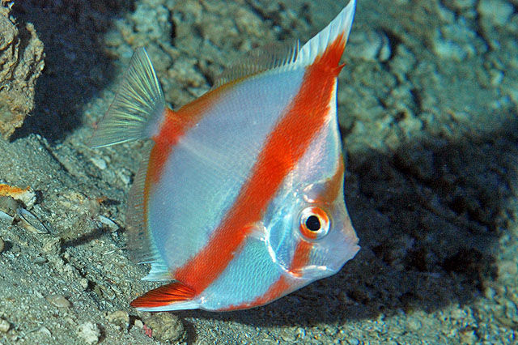
- fish of the day 11.03.2026
- Barbourisia rufa, Redvelvet Whalefish
-
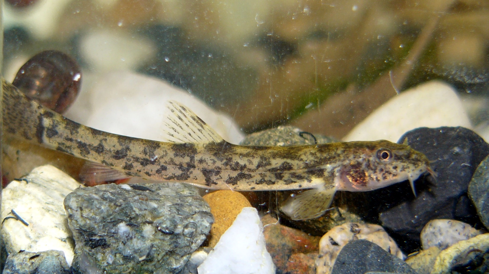
- fish of the day 10.03.2026
- Thaumatichthys bingami
-
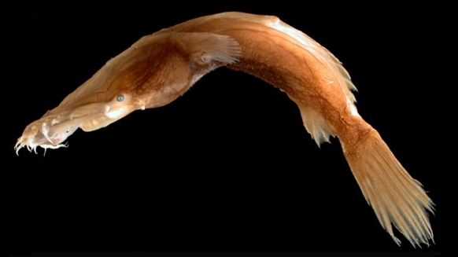
- fish of the day 09.03.2026
- Crossocheilus oblongus, Siamese algae-eater
-
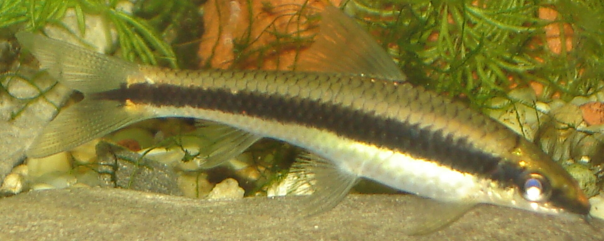
- fish of the day 08.03.2026
- Haplochromis ischmaeli
-
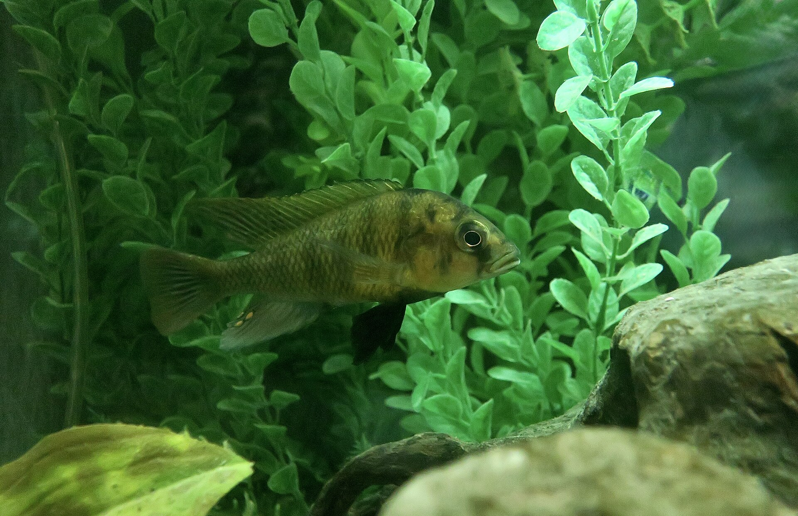
- fish of the day 07.03.2026
- Hypoplectrus atlahua, Jarocho Hamlet
-
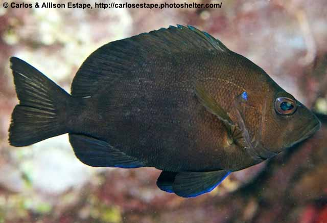
- fish of the day 06.03.2026
- Oxuderces dentatus
-
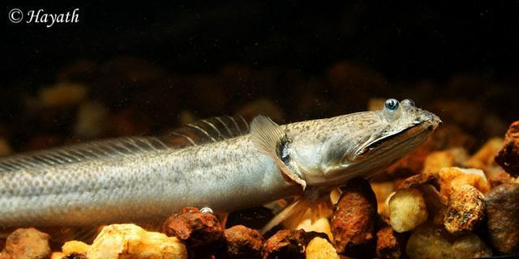
- fish of the day 05.03.2026
- Hypostomus oculeus
-
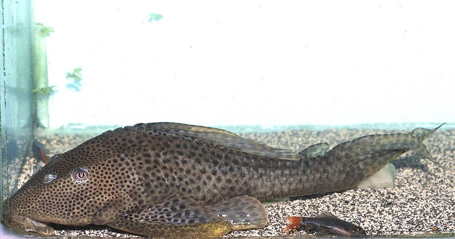
- fish of the day 04.03.2026
- Leptoderma affine, Eel Slickhead
-
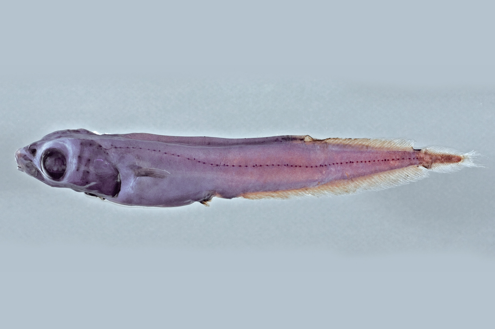
- fish of the day 03.03.2026
- Nimbochromis venustus, Giraffe hap
-
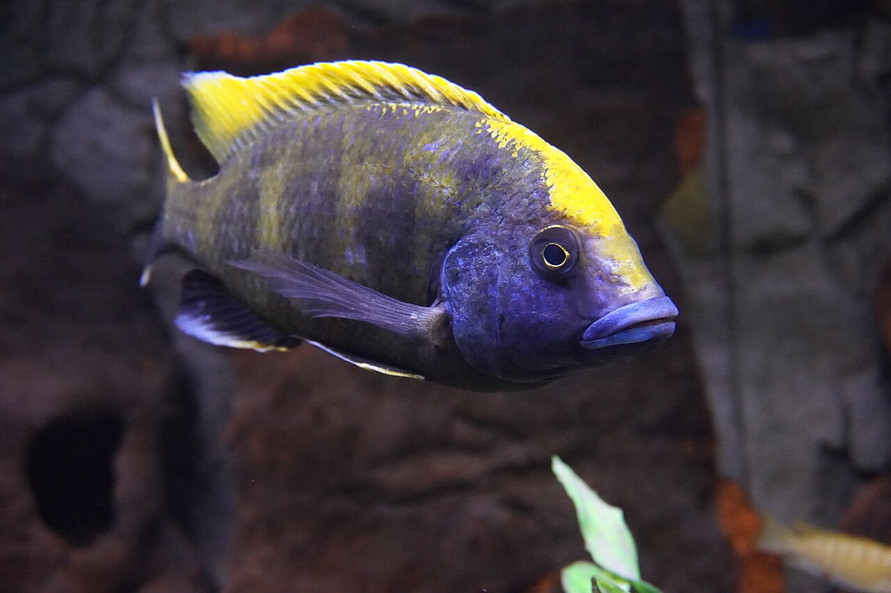
- fish of the day 02.03.2026
- Hyphessobrycon peugeoti, Peugeot tetra
-
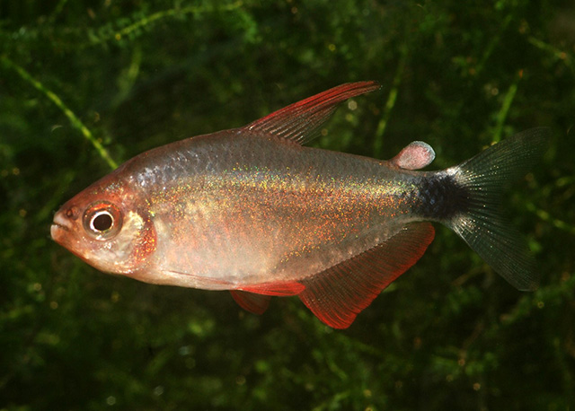
- fish of the day 01.03.2026
- Sparisoma cretense, Mediterranean parrotfish
-
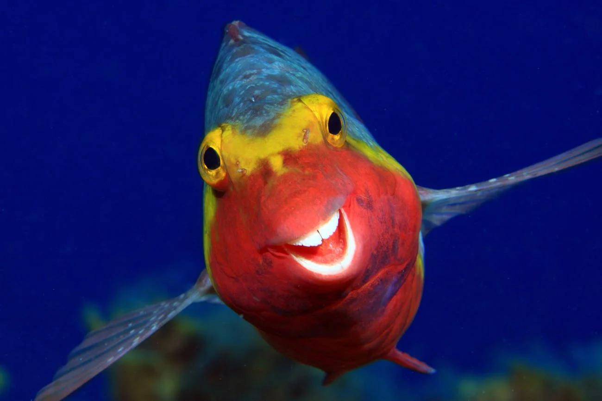
fish of the year

fish of the February results
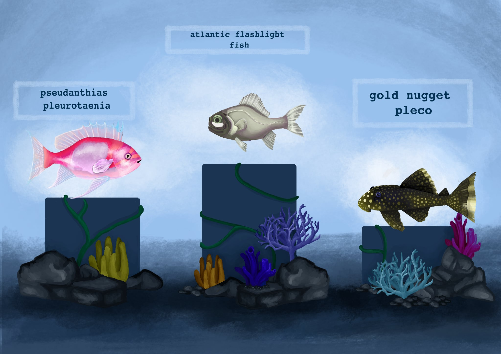